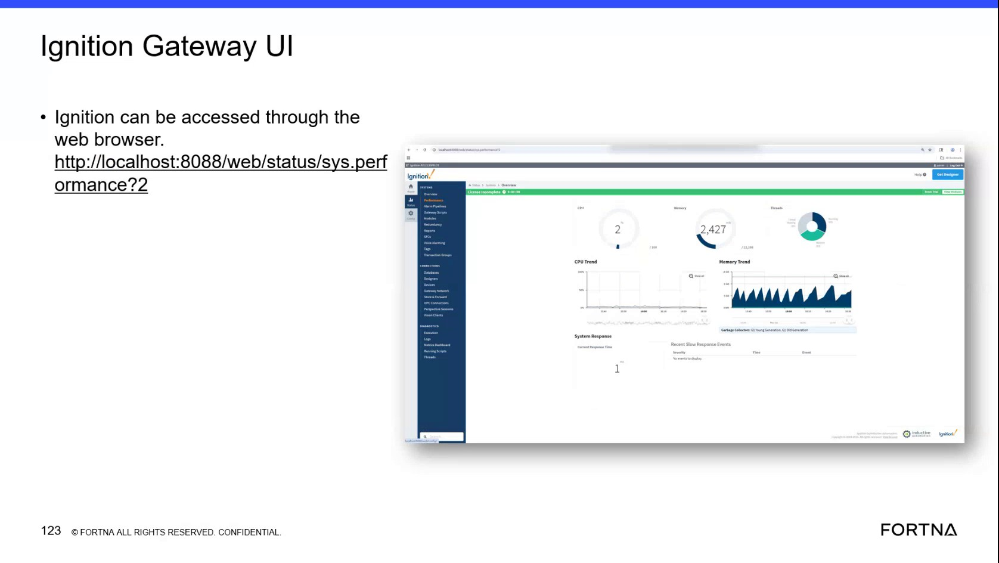

| Procedure ID | proc_check_ignition_gateway_performance_metrics_v1 |
|---|---|
| Title | Check Ignition Gateway Performance Metrics |
| Procedure Type | diagnostic |
| Primary Role | L2_support |
| Support Safe | Yes |
| Capability Tags | gateway_health, opc_connection_or_tipper_heartbeat |
| Access Surface | ignition_gateway |
| Audience Roles | L2_support, L3_support |
| Failure Pattern Tags | gateway_unhealthy, opc_connection_faulted, service_crash_or_restart |
| Validation Status | needs_sme_review |
| Merge Status | source_finalized |
An L2 support user can open the live Ignition gateway performance page in a web browser and review CPU, memory, connection, response-time, slow-response, garbage-collector, and tuning-script indicators for evidence of gateway health or degradation.
Use this Ignition gateway diagnostic procedure when gateway health, performance degradation, an unplanned restart, or related OPC and application symptoms require live evidence from the Ignition Gateway performance page.


Responsible role: L2_support
Instruction:
In a web browser on the support host, open the Ignition gateway performance page at http://localhost:8088/web/status/sys.performance?2.
Expected result:
The Ignition gateway performance page opens and displays gateway performance and diagnostic sections.
Stop or Escalate If:
Responsible role: L2_support
Instruction:
On the live Ignition gateway performance page, review the CPU Trend and Memory Trend displays for visible spikes, sustained elevated activity, or a memory pattern in which usage spikes and then drops to zero.
Expected result:
The CPU Trend and Memory Trend displays provide visible current or recent trend evidence for gateway performance.
Stop or Escalate If:
Responsible role: L2_support
Instruction:
On the Ignition gateway performance page, inspect the Database, OPC Connection, Perspective Session, and Vision Clients sections and preserve any displayed live information or fault state.
Expected result:
The four gateway sections display their current connection or client information, including any displayed OPC connection state.
Stop or Escalate If:
Responsible role: L2_support
Instruction:
Review System Response, Current Response Time, and Recent Slow Response Events on the Ignition gateway performance page, including any displayed Severity value.
Expected result:
The page displays the current response information and shows whether recent slow-response events are listed, including their displayed severity when present.
Stop or Escalate If:
Responsible role: L2_support
Instruction:
Review the Garbage Collectors, including Young Generation and Old Generation where displayed, and the Tuning Scripts indicators. Preserve the displayed values or statuses without treating unclear values as fixed health thresholds.
Expected result:
The Garbage Collectors and Tuning Scripts indicators are visible and their displayed values or statuses are available as diagnostic evidence.
Stop or Escalate If: